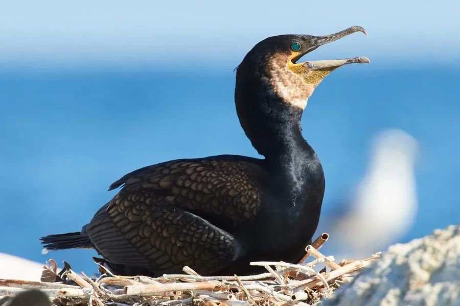

鸟类 · 动物界
普通鸬鹚 Phalacrocorax carbo

通体黑色、擅长潜水捕鱼的水鸟，驯养后能替渔民把鱼叼回船上，是中国南方传统“鸬鹚捕鱼”的主角。
- 分类
- 门脊索动物门纲鸟纲目鲣鸟目科鸬鹚科属鸬鹚属
- 栖息环境
- 河流、湖泊、水库、鱼塘与海岸，喜欢在水面开阔、鱼群丰富的水域活动
- 地理分布
- 欧亚大陆、非洲、北美和澳大利亚，中国各地水域均有分布
- 保护级别
- IUCN 无危（LC）；中国国家二级保护动物
物种志
普通鸬鹚体长 80–100 cm，翼展 130–160 cm，体重 1.7–3 kg。全身羽毛黑色并泛出蓝绿色金属光泽，脸部裸露的皮肤呈黄白色，喙长而带钩，喉部黄色。繁殖期头颈上会长出白色丝状羽，眼下皮肤也变得更加鲜艳。
普通鸬鹚广泛分布于欧亚大陆、非洲、北美和澳大利亚，中国各地水域均有分布。它栖息在河流、湖泊、水库、鱼塘和海岸，潜水捕鱼的本领极强，单次潜水约 30–60 秒，可下潜十余米。它的羽毛不防水，潜水后必须张开翅膀晾晒才能恢复飞行。繁殖期在崖壁或树上营巢，每窝产卵 3–5 枚，孵化 28–31 天。中国南方渔民驯养鸬鹚捕鱼已有上千年历史，会在它的颈部套上环防止吞下大鱼；如今普通鸬鹚已被列为国家二级保护动物，传统捕鱼方式也受到规范管理。
形态与习性
- 食性以鱼类为主，也吃虾和水生昆虫
- 体长80–100 cm
- 翼展130–160 cm
- 体重1.7–3 kg
- 潜水单次潜水约 30–60 秒，可下潜十余米
- 繁殖每窝 3–5 枚卵，孵化 28–31 天
- 寿命野外约 15 年
趣味知识
- 鸬鹚的羽毛不防水，潜水后必须张开翅膀晾晒，才能恢复飞行。
- 中国南方渔民驯养鸬鹚捕鱼已有上千年历史，会在其颈部套环防止吞下大鱼。
- 普通鸬鹚潜水时靠双脚划水，身体像鱼雷一样灵活。
- 繁殖期它的头颈上会长出白色丝状羽，眼下皮肤也变得更鲜艳。